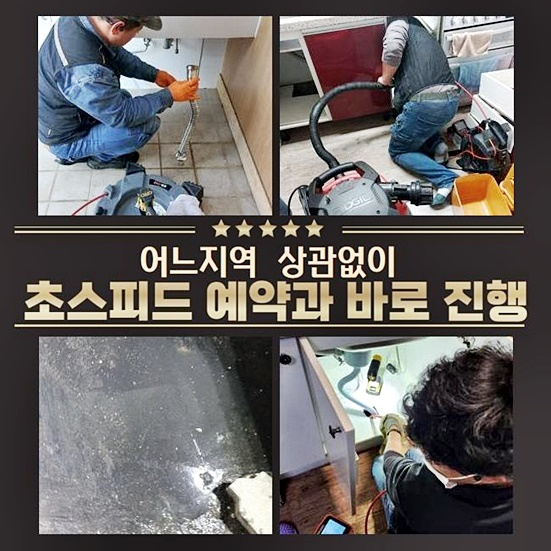
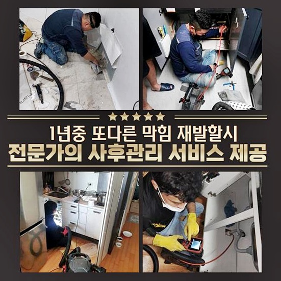
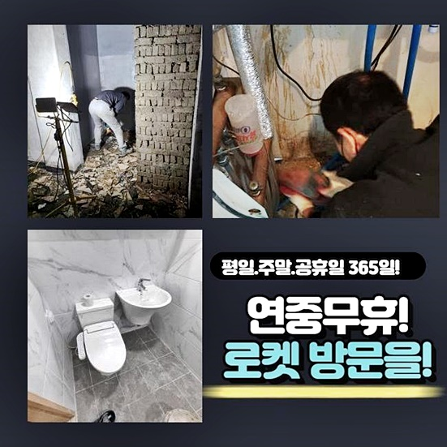
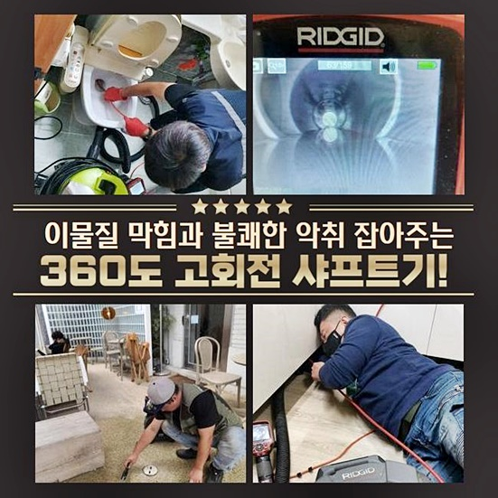
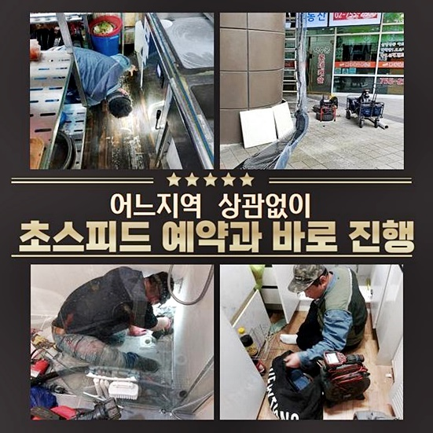
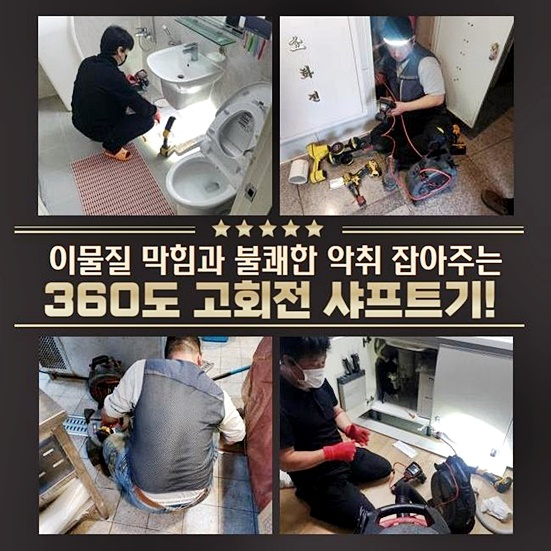
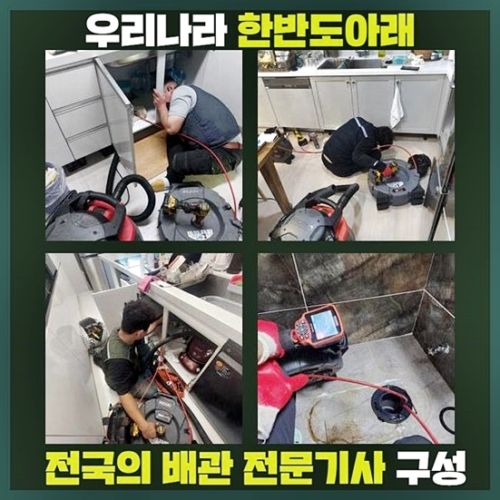

🏠 강남 신사동화장실막힘 자곡동 하수구청소 물샘전문업체
용인시 처인구 배관막힘 전문 시공 후기

📋 작업 개요
- 위치: 용인시 처인구, 수원시 영통구, 화성시 동탄
- 서비스 유형: 배관막힘, 하수구청소, 고압세척, 내시경점검
- 작업 일시:
- 업체명: 하수구수사대 (010-5615-2118)
🔍 문제 상황
강남 신사동화장실막힘 자곡동 하수구청소 물샘전문업체
전지역어디라도 내방가능한 배관전문업체에요
저희업체는 빨간날관계없이 상담과출장이 가능하고 배관을 뚫어내는것만이 아니고 배관공사와 고압세척까지 여러작업으로 착수하고있어요
오늘은 최근들어 작업드렸었던 현장사례가지고 막힘현상과 관련해서 설명드리고자하니 참고해주시면 도움되실겁니다
이번에 내방했던곳은 고객께서 인터넷서칭으로 전화주신 의뢰였답니다
물이빠지지않아 골치가아프다고 말씀하셨기에 연락받자마자 빨리 출동했어요
문제를 보인곳은 욕실쪽이라고 말씀하셨죠
본격적으로 작업하기전에 간단한 설명을드리자면 대개로 화장실쪽 배관이 막히게되는것은 두개의원인으로 나눠볼수있죠
첫째로는 씻거나 머리감을때 욕실이용시 자연스러운 상태로 발발되는 머리카락같은 오염물로 막히는경우고 두번째로는 고착물로인한 막힘입니다
이러하다면 오늘의장소는 막힌이유가 뭘까요
당사자께서 하수도에 가득차버린 물을빼내기 위하여 다양한 시도를하신건지 바닥쪽은 물이흥건히 고인 상황이었어요

🔎 원인 분석
💡 전문가 진단: 정밀 진단 장비를 사용하여 슬러지의 고착 여부를 판명하고 타격/세척 작업을 실시했습니다.
이런식으로 하수도가막히면 셀프제품같은 것들을 이용하여 자가조치로 뚫으려고하시죠
이러한 셀프조치의경우 잠깐동안 해결될순있지만 배관안에 이물들이 쌓이게되어 막히게된경우엔 자기만의 방법보단 전문회사를 호출하는걸 추천합니다!
올바르게 사용하지않아 하수도에 크랙이 일어날수있으며 도리어 주변이웃까지 피해를끼칠수있기에 조심하셔야합니다
이번에 작업드렸던 곳에서는 2차피해들이 나타나지않았으므로 흡입장비를 이용하여 넘친물과 하수구입구에 이물질들부터 순서에맞게 제거하기로 했어요
하수구입구쪽에 이물질들만 조금빠질뿐 하수관안에 잔여물질들은 빠지지않다보니 배수상황이 여전히멈춘 상태였어요
단단하게굳은 고착물들로 예상할수있었죠
단순히기계만을 통하여 뚫으려고하는것은 한계가있으므로 우선석회물을 부드럽게해주는 약품을이용해서 진행하고자 했습니다
석회물질의경우 화장실이나 싱크대등 물을쓰는곳이면 발생될수있는 성분이므로 욕실배수구막힘의 증세들로 발현되는일이 대다수랍니다
지속해서 쌓인다면 단단하게굳어 물이빠져나가는걸 방해하게되고 막힘문제나 역류상황을 발생시킨답니다
오래된장소일수록 이러한증세가 빈번히 발생하곤하는데 시간이지남에따라 조금조금씩 퇴적되기 때문이에요
다행인건 부드럽게 석회물이 누그러져있었기에 배관카메라를 활용해서 하수도내부 공간을 살필수있었죠
내시경카메라는 장비이름대로 배관안쪽을 확인할수있는 장비랍니다

🔧 작업 과정
내시경쪽에 어어진줄을 하수구속에 집어넣어 촬영하고있으므로 깊숙한곳까지 세밀히 확인할수있어요
막힌상태를 확인가능하니 신속처리와 이해가능한 견적산출이 가능하답니다
내시경화면으로 체크했더니 예측대로 고착덩어리가 하수구내벽에 접착되어 끼어있는상황이 체크되었어요
긴시간 굳어져있었기에 석션장비만을 사용하는것은 한계가있어요
그렇기에 샤프트기라고하는 도구를 동원해볼게요!
이도구는 회전하게되면서 하수구내에 붙어있는 이물덩어리를 잘게부숴서 소거해내는 전문도구랍니다
역류원인인 굳어진 이물질들까지 모두다 제거가가능해요
작업도중에는 거듭하여 내시경카메라로 하수구속을살피고 얼마나 제거되었는지 파악해야한답니다
혹여나중간에 남겨진오염물이 있다고하면 또한번 샤프트기계로 제거해내야만 문제없는작업이
하수도벽에 접착된 찌꺼기를 없애고나면 아까전에 소개해드렸던 석션기계로 하수관에 이물질들이 남겨지지않도록 분쇄완료된 잔여물질들을 빨아올려 없애버립니다
이런빌미로 작업에 착수할땐 늘상 전문장비가 전체로 이용되어야지만 확실하게 뚫어낼수있습니다
세척작업을 마쳤으면 역류문제가 발현되지 않는가도 확인할차례죠
배수상태가 정상적인지 물빠짐테스트를 진행해보았어요
막힘이없이 깔끔하게 물이내려가는걸 확인했습니다
테스트도중 물이잘흘러가지 못하거나 역류하게된다면 하수관내에 잔해물이 남겨져있다는 것이니 최종검사라고도 말해드릴수있어요
문제가없이 배수되는것을 고객분과함께 확인해보았어요
모든계획이 마무리되었습니다
상당한양의 고착물들을 보았는데 이러한것들이 하수구내부에 막고있으니 배수흐름이 원활하지못한거죠
현재저희가 깨끗히 뚫게되었으니 막힐염려없이 편히 사용하면되요!


✅ 작업 완료
덧붙혀서 설명드리자면 변기막힘의경우 근원적인이유를 제거해내지 못한다면 아무때나 재발하게됩니다
그렇지마는 많은고객이 저희들처럼 전문회사를 부르기보단 주위에서 쉽게구하는 약품같은것들로 뚫으려고하시는데요
전에 말씀드렸지만 이러한방식은 더큰손해를 발생시킬수있으므로 전문기사에게 의뢰하여 해결해보세요!
대한민국이라면 60분안으로 도착할수가있고 고객님의 편안함을 먼저 고려하고있으니 걱정하지않아도 된답니다!
이외에도 궁금한게있으면 아무때나편하게 전화주시고 오늘글도 마쳐볼게요!




⚠️ 하수구 배관 막힘 예방 및 관리 가이드
- ✅ 머리카락, 비닐, 물티슈 등 물에 분해되지 않는 이물질은 절대 흘려보내지 마세요.
- ✅ 기름기 많은 식기는 설거지 전 키친타올로 먼저 기름때를 닦아내세요.
- ✅ 주기적으로 배수구에 뜨거운 물을 가득 부어주어 유지방 고착을 방지하세요.
- ✅ 작업 후 1년 이내 재발 시 무상 A/S 보증 서비스를 제공합니다.
💡 핵심 정리
- 확실한 장비 작업(내시경 점검 및 샤프트 스케일링)으로 원인을 뿌리 뽑습니다.
- 작업 후 1년 이내에 동일한 부위 재발 시 100% 무상 A/S 서비스를 보장합니다.
- 서울 · 경기 · 인천 전 지역에 24시간 언제든 긴급 출동할 수 있도록 항시 대기 중입니다.
❓ 자주 묻는 질문 (FAQ)
🚨 용인시 처인구 배관막힘 문제로 고민이신가요?
정확한 원인 진단과 확실한 시공으로 재발 없는 해결을 약속드립니다.
24시간 긴급 출동 | 서울 · 경기 · 인천 전지역 | 1년 내 재발 시 무상 A/S